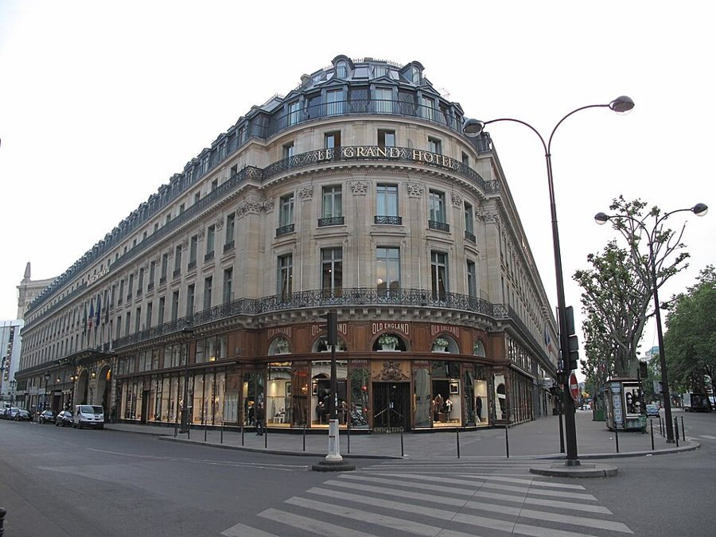
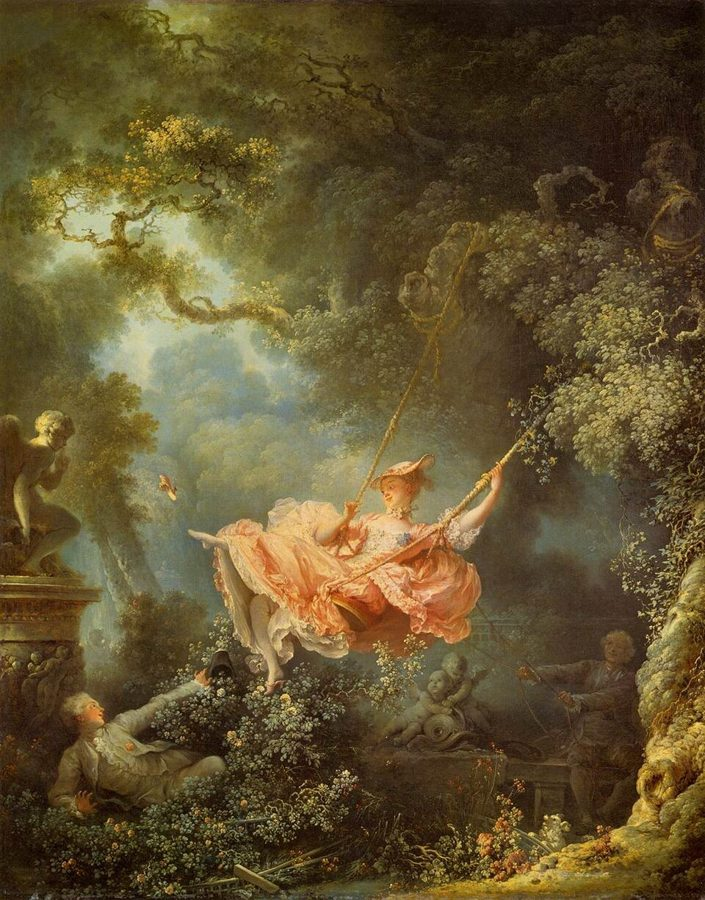
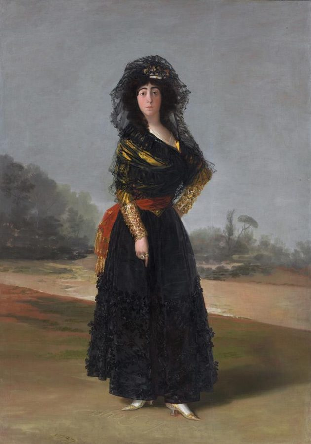
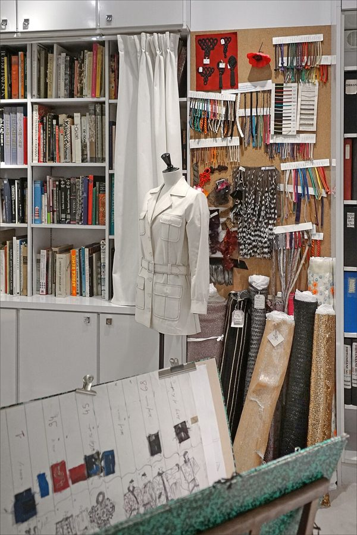

这一篇在做什么
1996 年 7 月，巴黎的高级定制时装周。作者以《纽约客》记者的身份，从星期日看到星期三：Valentino、纪梵希、Ungaro、Lacroix、圣罗兰，外加几场「可怜」的小秀。他从前排富太太在冷天里扇扇子讲起，一边记秀场里的人和衣服，一边追问：几乎没人买、年年赔钱的高级定制，为什么还要办下去？读的时候抓两条线：一条是一场接一场的秀，几乎每场都配着一个滑稽场面；一条是作者对这个问题的几次回答，留意他在哪一场才给出自己的答案。

大饭店（Grand Hôtel），2011 年，从卡皮西纳大道和斯克里布街的路口看。Valentino 和 Lacroix 两场秀都在它的舞厅里办（§1、§6）。Tangopaso，公有领域，维基共享资源 读之前：这篇的来历
文中没写年份，但推得出来：书里说这一周的大事是 Gianfranco Ferré 离开 Dior，Dior 是在 1996 年 7 月 5 日宣布这件事的，《国际先驱论坛报》次日就报道了；纪梵希那场由 John Galliano 设计，他当年 10 月就转去了 Dior。所以写的是 1996 年 7 月，一家人到巴黎后的第一个夏天，Luke 快两岁。这一篇打头第三部分「从物件学到的」，这一部分按题目归在一起：这篇讲衣服，下一篇讲法国菜。上一篇铁塔电梯的风波发生在 1997 年夏天，反而比这一篇晚一年，书里各篇并不全按时间排。作者这回是坐在秀场里的记者，不是买衣服的人，口气一直是半看热闹、半认真。
一门几乎没人买、年年赔钱、和普通女人穿什么不相干的生意，为什么还值得一年办两次？作者是在笑它，还是在替它说话？
读的时候带着这几个问题。不用先找答案，读完回来对照「检查一下理解」。
时装界替高级定制找的两种理由，作者信哪一种？他自己的理由是什么？§1 §6
作者说高级定制最大的毛病不是「不真实」，那是什么？这个看法和他在 Lacroix 秀上的感受矛盾吗？§4 §6
几乎每场秀都配着一个滑稽场面（扇扇子、冲门、太阳能夹克、两根指尖）。这些笑话是在拆台，还是在给感动垫底？§1 §3 §5 §7
这一篇的路线
明面上这一篇按日程走：星期日到星期三，一场秀接一场秀，像一份时装周日记。暗地里还有一条线：作者隔一两场就停下来想同一个问题，高级定制凭什么还在。§1 先摆出别人的两种说法，§4 在一场无聊的秀上冒出自己的第一个看法，§6 在 Lacroix 那场才给出答案。读译本时，从秀场八卦突然跳进一段议论，或者议论刚到高处就冒出一句粗话，都是作者有意这样剪：每次感动之后，他马上用一个滑稽场面把读者拉回地面。
看秀
道理
§1
§2
§3
§4
§5
§6
§7
扇扇子
「危机」
两种说法
人人都在盼
雨中冲门
姨妈的裙子
太熟的美
新模特
太阳能夹克
像戈雅
浪漫的卡通
塔夫绸
指尖
本站示意图。橙点是一场场秀，蓝点是作者停下来想的问题，大点是全篇的答案，折线是阅读顺序，虚线是原书的分隔。§1–§3 是星期日，§4 星期一，§6 星期二，§7 星期三。 作者落在哪： 作者说高级定制的用处也许有一百种，多半不体面或可笑；值得的是它的题材：女人穿衣服带出的情感。它是一幅浪漫的卡通，夸张却有劲，让人一瞬间觉得「我恋爱了」，再把这份情感传到成衣、照片和日后的回忆里。为此让富太太在冷天里扇扇子，代价不算大。
分节地图
原书这一篇有六处分隔，分成七节。每一节的粗体是读译本时认得出的场面；下面的斜体是英文这一节开头的几个词，打开电子书搜它就能跳到那里。读完一节打个勾。
冷天里，前排太太一齐扇扇子约 1000 词 I suppose you could say that my … 开场的荒诞场面定下全篇的调子；留意时装界那两种互相打架的说法。 摄影师起哄，模特换衣，人人在翻译约 600 词 The haute couture remains a rite. … 少讲哪一场，主要写秀场这个仪式；结尾一串「都在盼」是全篇的节拍。 体育场外淋雨，贵妇冲进纪梵希约 600 词 Most of the collections are shown … 一场闹剧接一片断头台主题的美丽衣服；留意作者拿大革命开的玩笑。 Ungaro 的闷秀，Kate Moss，滑板少年约 1000 词 Haute couture, everyone says, no longer … 作者第一次自己下判断；后半写模特，一位新模特的话 §6 要用到。 带插头的太阳能夹克约 200 词 Tell about the pathetic collections. … 全篇最短的一节，专讲一场「可怜」的秀。 Lacroix 的配乐和戈雅式的裙子约 1000 词 Tuesday night is Christian Lacroix. … 全篇的转折和答案都在这一节；最后一段马上泼冷水。 圣罗兰，Claudia 不肯走，Karen 的指尖约 500 词 Yves Saint Laurent, on Wednesday morning, … 答案之后的尾声；最后一句是个双关。
背景：作者默认你知道的事
按在书里出现的顺序排，标题前是节号。
§1 高级定制和巴黎高级时装公会「高级定制」（haute couture）在法国是受法律保护的称号，不是随便哪家量体裁衣都能用：哪些时装屋有资格，每年由法国工业部下属的委员会审定，日常的规矩由巴黎高级时装公会（Chambre Syndicale de la Couture Parisienne）管。要在巴黎有自己的工坊，每季办一场够规模的秀，书里说每场不少于五十套。衣服按客人身材手工缝制，一年两季，一月发春夏，七月发秋冬。真正下单的客人很少，各家靠同一个牌子下的成衣、香水、丝巾和授权商品赚钱。§1 说的「赔本赚吆喝」，就是指这层关系。
§1 前排和台上的人书里点名的时装界人物，按出场顺序。
Anna Wintour Anna Wintour 英国出生，1988 年起任美国版 Vogue 主编，全世界最有分量的时装编辑之一。§1 她和别的编辑被一大早叫起来看秀。
Suzy Menkes Suzy Menkes 英国时装记者，当时是《国际先驱论坛报》的时装主笔，以头顶那个蓬起的发卷出名。§1 和 Wintour 并列，代表时装媒体。
Stella Tennant Stella Tennant 英国模特，出身贵族，九十年代中期走红。§1 Valentino 的第一套衣服由她穿出来。
§1 这一周的「危机」：Ferré、Dior 和 Pierre CardinGianfranco Ferré 是意大利设计师，1989 年起执掌 Dior 的设计。1996 年 7 月 5 日，时装周前夕，Dior 宣布他年底离开，一家大时装屋一时没了主设计师，这就是书里打了引号的「危机」。书里顺手拿 Pierre Cardin 作例子：这位设计师以大量授权出名，从袜子到墨镜都挂他的名字。作者的意思是，买 Cardin 手帕的人想到的是这些满街都是的东西，不是他的高级定制，所以「靠高级定制给全线打招牌」的老理由不灵了。
§3 两家大饭店和一座体育场多数秀在两家饭店的舞厅里办。大饭店（Grand Hôtel）在加尼耶歌剧院旁边，1862 年开业，是第二帝国（拿破仑三世在位，1852–1870）的建筑，舞厅高而圆；洲际饭店（Hôtel InterContinental）在卡斯蒂廖内街（rue de Castiglione），离旺多姆广场几步，作者说它的舞厅是仿「伟大世纪」的。纪梵希偏把秀搬到城边的一座体育场，于是有了 §3 的淋雨和冲门。
§3 纪梵希、Galliano 和断头台纪梵希（Givenchy）是 Hubert de Givenchy 1952 年创立的时装屋，奥黛丽·赫本的许多戏服出自他手。他 1995 年退休，英国设计师 John Galliano 接手，以戏剧化的布景出名。这一场演的是十八世纪的贵族和大革命：布景像弗拉戈纳尔（Fragonard）画里的林子，他是路易十五时代的画家，爱画贵族在林间荡秋千、调情；衣服是大革命前后流行的高腰直筒长裙。tumbrel 是恐怖统治时期把犯人拉去断头台的囚车。

弗拉戈纳尔《秋千》，1767 年。§3 说 Galliano 在体育场里搭了一片「弗拉戈纳尔式」的林子，指的就是这种画里的树林。Jean-Honoré Fragonard，公有领域，维基共享资源
André Leon Talley André Leon Talley 美国时装编辑，长期在美国版 Vogue，个子高大，时装界无人不识。§3 他往门口一挤，引得贵妇们冲了门。
Inès de la Fressange Inès de la Fressange 法国模特，八十年代香奈儿的招牌面孔。§3 她穿的那件，节目单上写明配一条「断头台前」的血红腰带。
§4 超模和她们的熟脸九十年代初是「超模」的年代，几位名模的脸天天上杂志封面，书里直呼其名。作者的意思是：太熟了，看到 Kate Moss 不会想「好美的女孩」，只会想「哦，是 Kate Moss」。他拿来作比的 Merv Griffin 是美国电视脱口秀主持人，Shecky Greene、Buddy Hackett 是常上电视脱口秀的老牌喜剧演员。
Linda Evangelista Linda Evangelista 加拿大模特，1990 年那句「一天不到一万美元我不起床」流传很广。§4 作者说她一脸「我早不靠这个吃饭了」。
Kate Moss Kate Moss 英国模特，以瘦出名。1994 到 1998 年和演员 Johnny Depp 在一起，所以作者说跟她聊天得避开这个名字；说她「丰满」是反话。
Claudia Schiffer Claudia Schiffer 德国模特，九十年代初香奈儿的招牌面孔。书里说她被 Lagerfeld 冷落，转到圣罗兰（§7），这是书里的说法。
Karen Mulder Karen Mulder 荷兰模特。§6 出场一次，§7 的结尾是她的。
§4 有钱人改买的画Brice Marden（1938–2023）是美国抽象画家，六七十年代以单色的长方块出名：一块或几块平涂的颜色，什么也不画。作者说今天的有钱女人宁可买这种画，也不买高级定制晚装：炫富要含蓄，看不懂的抽象画比一身亮片更能压人一头。这是作者的观察和玩笑，书里没有给数字。
§5 卢浮宫地下的展厅和 Lapidus 父子卢浮宫卡鲁塞勒（Carrousel du Louvre）是卢浮宫地下的购物廊和展厅，1993 年开放，展厅本来就是为办秀、办展设计的。作者挖苦说：正因为它宽敞明亮干净，样样合适，所以谁都不想在那里办。Olivier Lapidus 是设计师 Ted Lapidus 的儿子，接手了父亲的时装屋。
§6 Lacroix、伊万娜·特朗普和戈雅Christian Lacroix 1987 年开了自己的时装屋，以蓬蓬裙和大花大色出名，正赶上八十年代的炫富风气。作者说那是伊万娜·特朗普（Ivana Trump）的年代：她是唐纳德·特朗普的第一任妻子，1990 年两人闹离婚，分手费的官司天天上小报。Lacroix 说自己最近一直和维米尔（Vermeer，十七世纪荷兰画家）待在一起，作者却看到了戈雅（Goya）：十八世纪末的西班牙宫廷画家，画过披黑纱头巾、穿黑裙的阿尔巴公爵夫人。台下还坐着总统夫人希拉克夫人（Bernadette Chirac）。

戈雅《阿尔巴公爵夫人》，1797 年。§6 作者说 Lacroix 的裙子像戈雅画里的公爵夫人：头纱、黑缎裙，再重新做得天马行空。Francisco Goya，公有领域，维基共享资源 §7 圣罗兰和左派的「贵族」圣罗兰（Yves Saint Laurent）1961 年创立自己的时装屋，1966 年的女式吸烟装（le smoking）是他的代表作。作者说 Lacroix 的秀场是新上台的戴高乐派政府的地盘（1995 年希拉克当选总统，朱佩任总理），圣罗兰则是老社会党「贵族」的心头好。Jack Lang 是密特朗时代的文化部长（1981–1986、1988–1993），书里说他坐在那儿像是这地方的主人。括号里「要现代的乐趣，不要现代主义的牺牲」，是作者给密特朗时代下的断语。

圣罗兰当年的工作室，今天是巴黎圣罗兰博物馆的一部分，2019 年。人台上是一件猎装式外套，这是他的招牌款式之一。dalbera，CC BY 2.0，维基共享资源 词与短语
只收中文译文多半传不出原味的地方：熟词生义、反话和挖苦、典故、夹在英文里的法文。读译本读到觉得别扭、不知道作者在说什么时，来这里找那一节的；斜体小字是原句里的几个英文词，在电子书里搜它就能找到原文。
§1 冷天里，前排太太一齐扇扇子
the Schleswig-Holstein question
… like the Schleswig-Holstein question, comprehensible to only …
石勒苏益格—荷尔斯泰因问题
十九世纪丹麦和德意志诸邦争夺两个公国的外交难题，以复杂出名。据传英国首相帕默斯顿说过，全欧洲只有三个人弄懂过它。作者拿它比秀场排期的「礼节」有多绕。
rolling the works
… a little forward, rolling the works …
全身一起摆着走
the works 是口语「全套、所有家当」。括号里一路列出头、肩、胯，最后一句把整副身子都算上：模特那种扭动全身的台步。
looking game
… looking game despite the hour and …
一副打起精神、照样上的样子
game 作形容词是「愿意干、不怵」，和游戏无关。大清早，还裹着一身蕾丝，她照样走得精神。
I fan, therefore I am
… No. I fan, therefore I am.
我扇故我在
套笛卡尔的「我思故我在」。法国记者朋友先说「我们看，所以我们扇」，又改口成这句：扇扇子不是为了凉快，是在证明自己在场。
America’s Cup
… entering a yacht in the America’s Cup …
美洲杯帆船赛
1851 年开始的帆船赛，造一条参赛船要花巨资，是富豪和国家的面子工程。和它对比的 Seventh Avenue 是纽约的服装业大街：做高级定制更像烧钱比赛，不像开店做买卖。
like Cyprus or the New York theater
… always in crisis, like Cyprus or …
跟塞浦路斯、纽约的戏剧界一样
塞浦路斯 1974 年起南北分裂，「危机」几十年没断；纽约戏剧界年年喊不景气。作者的意思：「危机」是高级定制的常态，不必当真。下一句又收回：这回的危机是真的。
loss leader
… so—the loss leader justification—no longer works.
亏本招徕品
商业术语：超市故意亏本卖的东西，用来把客人引进门。高级定制就是这样的招牌：自己赔钱，替香水、丝巾打名气。作者说这个理由已经不灵了。
défilé
… couture line in the défilés.
（法文）时装秀
défilé 本义是列队行进，阅兵也叫这个词。时装界用它指走秀。作者常夹用这个法文词说「秀」，带着秀场的行话味。
a kind of Tang and Teflon explanation
… a kind of Tang and Teflon explanation …
「太空副产品」式的说法
Tang 是美国的橙味冲剂，Teflon 是不粘锅涂层。美国人常把它们说成太空计划的副产品（其实都不是 NASA 发明的），用来证明烧钱的太空计划值得。作者拿这个比「高级定制是时装业的研发部门」那套说辞。
a kind of Paris Zen
… in response a kind of Paris Zen.
巴黎式的禅
指出两种说法自相矛盾，对方答：矛盾正是重点。像禅宗的机锋，不解释，你自己悟。
seraphically
Then he walked off seraphically.
一脸天使般的安详
seraph 是六翼天使。说完一句不通的话，飘然而去，毫无愧色。字面像在夸他安详，其实是调侃。
§2 摄影师起哄，模特换衣，人人在翻译
two seas of becalmed aestheticism
… amid two seas of becalmed aestheticism.
两片风平浪静的唯美之海
becalmed 是帆船遇上无风、停住不动。摄影师那一小块是看模特身体的「快乐的异性恋欲望」，两边的观众只在冷静地看衣服的美。作者特意点出 heterosexual，对照不言自明。
lining up in order not to be allowed in
… lining up in order not to be …
排队，为的是被挡在门外
排队本来是为了进去。括号里解释：秀从不准时，人人还是早早去门口挥请柬。要的是排队这个姿态。
the regular guy
… that the regular guy might describe …
普通男人
regular 不是「规律的」，是「普通、正常」。普通男人看来都是「褐色的什么」，时装人却分得出栗色、巧克力色、米色、咖啡色、古铜色。§4 又用了一次。
touchingly
… what are still called, touchingly, cocktail dresses
（叫法老派得）让人心头一软
「鸡尾酒裙」是老派叫法，秀场还照样这么叫（what are still called）。touchingly 是带点怜爱的调侃。
Mordoré silk laminated ottoman
… Valentino’s “Mordoré silk laminated ottoman pinstriped …
金褐色覆膜真丝罗缎
mordoré 是法文「金褐色」；ottoman 在这里不是沙发，是一种横棱纹的丝织物。这一长串到记者手里只剩两个词：米色长裤。
couture moment
… for what they call a couture moment
「定制时刻」
时装迷的说法：俗套散去、造作的东西忽然动人的那一瞬间。作者这里还是转述别人的说法（the newcomer is assured，新来的人被人这样保证），带点保留；§6 他自己撞上了这一刻。
transporting
… something crazily artificial becomes transporting.
让人神魂出窍
transport 在这里是把人带出自身、心醉神迷，不是运输。
will fall off
… models’ dresses will fall off.
（盼着裙子）掉下来
前面三句「都在盼」都是正经的盼头，第四句换成摄影师的盼头，一下子落地。紧跟三个短句收尾，最后一句 The ladies fan 回到 §1 的扇扇子。
§3 体育场外淋雨，贵妇冲进纪梵希
mock grand siècle
… long and narrow and mock grand siècle
仿「伟大世纪」风格
grand siècle 是法文，指路易十四的十七世纪，凡尔赛那种气派。mock 是仿造的。下半句的 Second Empire 指拿破仑三世的第二帝国，见「背景」。
Things get ugly fast.
Things get ugly fast.
场面很快就难看了
get ugly 是局面闹僵、要起冲突，不是有人变丑。用警匪片的口气写一群淋雨的贵妇。
perfectly constructed face
… the rain pelts her perfectly constructed face
精心「建造」的脸
construct 是盖房子的词，暗指浓妆，或许还有整形。雨点砸在上面，像砸在一座工程上。
pathetic force
… despite its obvious pathetic force
博人同情的分量
pathetic 这里取老义「引人怜悯的」，不是「可悲、差劲」。第二位太太年轻些，忍住没说「几十年」，只说「有一段时间了」。
insupportable
Insupportable is a bitter word in French
（法文）叫人受不了
英文也有这个词但很少用，法语里却是日常的抱怨。作者说它是个「苦」词，scandal（丑闻、岂有此理）才是要开打的词。
When the crowd gathered outside the Bastille
When the crowd gathered outside the Bastille …
当年人群聚在巴士底狱外面时
作者编的笑话：1789 年攻占巴士底狱，是从某位老太太喊「这是丑闻」开始的。下一段贵妇们果然「冲门」。
storming the Givenchy gates
We are storming the Givenchy gates …
强攻纪梵希的大门
storm 当动词是「猛攻、攻占」，the storming of the Bastille 就是攻占巴士底狱。冲进去之后，又干坐了半个多小时。
ever-popular fashion themes of decapitation
… the ever-popular fashion themes of decapitation …
「历久不衰的」砍头主题
反话。前面的 appropriately（恰如其分）接着刚才的「暴动」：门外刚闹完革命，台上就演断头台。
toned down and deblooded
… toned down and deblooded, the obvious …
收敛一点、去掉血色
deblooded 多半是作者临时造的词：把「断头台前的血红」去掉。后面的 the obvious tip 是赌马的「热门推荐」：这些裙子改一改，最可能成为今秋的流行。
§4 Ungaro 的闷秀，Kate Moss，滑板少年
corniness
… is not unreality but corniness
俗气、老土
corn 是玉米，corny 是乡下气、老套的煽情。作者说高级定制不是太离谱，而是太像你姨妈压箱底的那件。
for best
… aunt Ida always wears “for best”
（留着）出客穿
英式老说法，「最好的衣服留着正式场合穿」。Ida 是老派的名字，这位姨妈是虚构的，代表人人家里都有的那种长辈。
crushing evidence
… was meant to be crushing evidence of wealth
压倒性的证据
crushing evidence 本是「铁证」。下一句接 wealth, wanting to crush：财富想压倒别人，如今要更含蓄的证据。同一个词用了两个意思。
phoning it in
… the name models are phoning it in
敷衍了事
phone it in 是「打个电话交差」，人到了心没到。名模们走秀走得应付。
smolder
… to them to smolder, they smolder
（眼神）冒火
smolder 本义是闷烧、冒烟不起火，引申为压着的情欲。摄影师喊一声，B 级模特就给出那种眼神。
not so much a commodity as a commonplace
… is not so much a commodity as …
与其说是商品，不如说是家常
commodity 和 commonplace 头韵相同，意思一个是「稀罕得能卖钱」，一个是「随处可见」。名模的美见得太多，就不稀奇了。
bang up against
The projected fantasy bangs up not against …
撞上
幻想撞上的不是「够不着」，而是「太熟了」。后面括号里的玩笑接着说：真跟她过日子，你得避开她当时的男友 Johnny Depp，得夸她瘦。
zaftig
… it is the New Kate—how zaftig.
丰满
意第绪语来的美国俚语，说女人身材丰腴。Kate Moss 以瘦出名，「新 Kate」走丰满路线是玩笑。
smooth
I find the models smooth too.
平滑，挑不出毛病
滑板少年说巴黎 smooth，指路面平坦好滑。作者借这个词说模特：光滑完美，挑不出毛病，接回 §4 那句「可她们就是完美」。
tipped by the fancy
… being tipped by the fancy as the …
被行家看好
the fancy 是老式英语，指赛马、拳击的那一圈迷和内行；tip 是赌马的「推荐」。所以下一句作者说自己像刚押中肯塔基赛马会冠军的新手。
start at power forward
… big enough to start at power forward
个头够打篮球首发大前锋
power forward 是篮球的大前锋，要高大强壮；start 是首发。夸一位模特又懂行、又高、又好看，混进一句篮球话，故意不搭。
§5 带插头的太阳能夹克
Tell about the pathetic collections.
Tell about the pathetic collections.
说说那些可怜巴巴的秀。
pathetic 这里是「让人替它难堪」，和 §3 那个「博人同情」不同。这句没头没尾的祈使句，读起来像作者给自己记的提纲。下一句的 specimen 是标本：拿一场当样本。
which means, naturally
… which means, naturally, that absolutely nobody …
所以「自然」没人肯去
反着用的「自然」：专为办秀造的地方，条件样样好，按时装界的逻辑，好就是不时髦。
brancher
… plug that could brancher you right …
（法文）接上、插上电
法文动词，本义是接通电源。过去分词 branché 在口语里还是「赶时髦」。夹克能让你「插进」互联网，这个词多半也顺带了「潮」的意思。
Nobody knows which way to look.
Nobody knows which way to look.
大家尴尬得不知道眼睛往哪儿放
不是找不到方向，是窘得没法看台上。前一句刚响起《星际迷航》的主题曲。
§6 Lacroix 的配乐和戈雅式的裙子
of the moment
Lacroix is of the moment.
正当红
不是「片刻的」，是「眼下最时兴」。所以台下连总统夫人都来了。
the big settlement
… clothes to wear for the big settlement.
（离婚）大笔分手费
settlement 在这里是离婚的财产和解。前半句刚提伊万娜·特朗普：穿着去拿那笔大钱的衣服。挖苦八十年代的暴发气。
a good long bath of contempt
… a good long bath of contempt
好好泡一个鄙视的长澡
settle in for a good long bath 本是舒舒服服泡澡。作者准备好整场看不起，还很享受。下一段一开头就被推翻。
classical chestnuts
… or classical chestnuts, like Albinoni and …
听烂了的古典名曲
chestnut 除了栗子，还指讲了又讲的老笑话、老曲目。原文举的是阿尔比诺尼和莫扎特，阿尔比诺尼名下那首《柔板》就是到处都听得到的一首。
taken a wrong turn in the museum
… taken a wrong turn in the museum
在博物馆里走错了展厅
Lacroix 说自己最近一直「和维米尔待在一起」，作者说看到的分明是戈雅：荷兰的安静室内，变成了西班牙的黑纱和缎子。见「背景」。
the Beatles’ baroque period
… turns to the Beatles’ baroque period …
披头士的「巴洛克时期」
把美术史分期的说法套在流行乐队上，指 1966 年前后披头士用弦乐、古钢琴的那批歌，Eleanor Rigby 和 For No One 都出自那年的唱片《左轮手枪》（Revolver）。
dressed up as Viola
… an actress dressed up as Viola for …
扮成薇奥拉
莎士比亚《第十二夜》的女主角，海难后女扮男装。伊丽莎白式的薄纱袖让作者想到莎剧舞台，「美得不可能的一场演出」是在夸这套衣服。
It’s all too much
It’s all too much, and that’s where …
全都太过了
too much 通常是批评，作者却说好处正从「太过」开始。这也是披头士一首歌的歌名，在这一串披头士之后，可能是顺手的呼应。
camp
… unreal, but they don’t seem camp.
刻意做作的趣味
camp 作形容词不是「营地」，是夸张、做作到好玩的那种趣味（桑塔格有名文《关于坎普的札记》）。作者说这些衣服夸张却真诚，不是拿夸张开玩笑。
sizing up
… those moments of painful sizing up, which …
互相掂量、打量
size up 是估量对方。恋爱开始时彼此暗暗打量的那几秒，很煎熬。作者说高级定制让人希望这种时刻能走得慢一点、隆重一点。
a peg to hang a good memory on
… peg to hang a good memory on
挂一段好回忆的钉子
peg 是挂衣钉。一件衣服、一张照片，多年后成了挂住回忆的地方。衣服的比方用在回忆上，很贴。
Love walks back up the runway
In a minute Love walks back up …
「爱情」又顺着天桥走了回去
大写的 Love 把模特写成爱情本身，接上前面那句「爱情走下天桥」（love walking down a runway）。一分钟后她换回牛仔裤，在打电话找经纪人。
taffeta coming out my ass
… I’ve got taffeta coming out my ass
塔夫绸多得要从屁股里冒出来了
粗话，「受够了」的意思。刚写完全篇最动情的两段，作者立刻放一句模特的抱怨，把读者拉回地面。
§7 圣罗兰，Claudia 不肯走，Karen 的指尖
Gaullist
… haunt of the new Gaullist French government …
戴高乐派的
法国右派的主流一支，希拉克和朱佩都属这一派。和后面的「老社会党贵族」相对：时装秀也分左右。
looking as though he owned the place
… looking as though he owned the place
一副主人的派头
字面是「像这地方归他」。Jack Lang 已经下台三年多，在圣罗兰的秀上还是一副当家作主的样子。
modernity without the sacrifices of modernism
… the pleasures of modernity without the sacrifices …
要现代生活的乐趣，不要现代主义的苦行
中文两个词都是「现代」，英文分得清：modernity 是现代的生活方式，modernism 是讲究简朴、牺牲装饰的现代主义艺术。圣罗兰的衣服时髦又舒服，不讲苦行。
Everything gets a hand.
Everything gets a hand.
每一套都有掌声
give someone a hand 是鼓掌。每一套都鼓掌，也就分不出哪一套特别好。可以和 §6 观众「真心、不是出于礼貌」的鼓掌对照着读。
first-desk position
… she gets the first-desk position.
头号位置
多半借乐团的说法：弦乐声部第一排的谱架，首席坐的地方。书里没细说是哪一个位置，只说她排在最显要的那个。
not what you would call a team player
… what you would call a team player
不怎么讲团队精神
轻描淡写的说法，意思是只顾自己出风头。后面几句坐实了。
making love to every camera in sight
… making love to every camera in sight
对每一台镜头卖弄风情
make love 的老义是求爱、调情，不是字面的那件事。站在天桥尽头一个镜头一个镜头地抛媚眼。
the exact change lane
… stuck in the exact change lane …
（收费站）只收零钱的车道
当年纽约荷兰隧道的收费站有专给备好零钱的人走的快车道。后面 on a hunch 是凭感觉开进去的，其实没备好零钱，卡住后面一串车。
robe de soir courte
… robe de soir courte de mousseline …
（法文）黑色雪纺缎面短晚装
节目单上的法文写得端端正正，作者马上用英文说穿：一件透明的丝质睡裙式衣服。
for one reason or another
… that, for one reason or another, provides …
不知出于什么原因
装糊涂的说法：下面有内衣，上面没有，原因大家心知肚明。
Nothing doing.
Karen smiles. Nothing doing.
没门儿。
口语里的干脆拒绝，不是「什么也没做」。摄影师求她「给点什么」，她笑一笑，手指不动。
a fashionable vacuum
… someone had left a fashionable vacuum.
时装上的一块空白
多半套「大自然厌恶真空」的老话：时装界总要把每一处都填满配饰，这一回卡片上什么也没配。下一句她「用指尖把它填满了」，全篇在这个双关上收住。
后来
这一篇停在 1996 年 7 月的时装周。下面接着讲书里几家时装屋后来怎样。每条都写了核对日期，这类内容过一两年就会变。
Galliano 从纪梵希到 Dior
时装周前夕，Dior 宣布 Ferré 年底离开。1996 年 10 月，Galliano 从纪梵希转任 Dior 的设计师，1997 年 1 月办了在 Dior 的第一场高级定制，正逢 Dior 五十周年；纪梵希那边由另一位英国设计师 Alexander McQueen 接手。Galliano 在 Dior 待了十四年，2011 年 2 月因在巴黎一家酒吧发表反犹言论被停职，3 月 Dior 启动解雇程序。核对于 2026-10。依据：《国际先驱论坛报》1996 年 7 月 6 日报道，《女装日报》1996 年 10 月 11 日、路透社 1996 年 10 月 14 日报道，《纽约时报》1997 年 1 月 21 日报道，《卫报》2011 年 2 月 25 日、3 月 1 日报道。
圣罗兰和 Lacroix 的高级定制收场
圣罗兰 2002 年 1 月 22 日在蓬皮杜中心办了告别秀，从此退出高级定制。Lacroix 的公司在 2009 年 6 月进入司法重整，7 月用库存面料办了一场高级定制秀，全场起立鼓掌；同年 12 月法院批准的重整方案裁掉大部分员工，停掉了高级定制和成衣。核对于 2026-10。依据：巴黎圣罗兰博物馆网站，《世界报》2009 年 6 月 2 日、12 月 2 日报道，法新社 2009 年 7 月 7 日报道。
值得停下来的句子
The besetting sin of haute couture, though, is not unreality but corniness— §4，第一段。本站译：不过，高级定制的老毛病不是不真实，而是俗气。
前一句刚说「人人都说高级定制和普通女人穿什么没关系了」，这一句用 though 掉头：大家骂错了地方。not … but … 把两个抽象名词并排对比，unreality 是「离谱」，corniness 是「老土」，一个往天上飘，一个往地上沉。besetting sin 是宗教味的词，指改不掉、总缠着人的那种罪，用在时装上带点调侃。中文说「俗气」，丢了 corny 里那股乡下玉米味和煽情劲。
Couture is a romantic cartoon. It’s a caricature of the romantic impulse, with a cartoon’s exaggerations but a cartoon’s energy and lighthearted poetry too.— §6，第四段开头，全篇的答案。本站译：高级定制是一幅浪漫的卡通。它是浪漫冲动的漫画像，有卡通的夸张，也有卡通的活力和轻快的诗意。
第一句短得像下定义，第二句才展开。关键在 but：夸张是缺点，活力和诗意是优点，两样都是 a cartoon’s，同一个来源。作者承认它夸张，又不肯因为夸张就看轻它，这正是他对整个时装周的态度。cartoon 和 caricature 中文都可以叫「漫画」，英文里一个偏「卡通」的轻快，一个偏「讽刺画」的变形，两词并用，意思是有笑点也有真情。
检查一下理解
先在心里答，再点开。答错的那题，回书里把对应那一节再读一遍。
1.（§1）天那么冷，前排太太为什么还扇扇子？法国记者朋友怎么看？ 七月的时装周向来闷热，扇扇子成了看秀的习惯动作，天冷也照扇。朋友套笛卡尔说「我扇故我在」，又用手势表示：这不比整个时装周更荒唐，大家跑来看自己永远不会穿的衣服，本身就是一串绕圈的矛盾。
2.（§1）时装界替高级定制找的两种理由是什么？作者为什么觉得好笑？ 一种说它是时装业的研发部门，今天的技巧会影响明天的衣服；一种说它是法国手艺的活记忆，出于对传统的孝心。一个向前看，一个向后看，不能同时成立。被指出矛盾时，对方说矛盾正是高级定制的意义，然后飘然走开。
3.（§2）作者说秀场上几乎人人都在「翻译」，各自在翻译什么？ 记者把节目单上的时装行话翻成大白话，一长串面料名到了页边只剩「米色长裤」；服装商想把高级面料上的颜色和廓形翻成棉布、化纤去卖；少数纯看客在等「定制时刻」，等造作的东西忽然变得动人。
4.（§4）作者说高级定制的毛病是「俗」而不是「不真实」，这是什么意思？ 那些华服不像没人敢穿的怪东西，倒像姨妈留着出客穿的亮片裙。拿一堆昂贵材料炫富是老派做法，显得原始；如今有钱人要的是更含蓄的证据，比如抽象画。
5.（§4）作者为什么说名模看上去「没有想象中那么美」？ 她们其实比想象的还美，但脸太熟了，美成了家常。看到 Kate Moss 只会想「是 Kate Moss」，幻想撞上的不是够不着，而是太熟悉。这是作者说的普通男人给自己找的台阶，他自己也承认这是一种安慰。
6.（§6）作者本来准备怎样看 Lacroix 的秀？后来是什么让他改变了？ 他把 Lacroix 和八十年代的俗气连在一起，开场那件丑裙子让他准备好好鄙视一番。后来是混搭得出奇的配乐（瑞典乐队、Joe Jackson、贝利尼、披头士）和暗色调、像戈雅画里的裙子打动了他，观众也真心鼓掌。
7.（§7）最后 Karen Mulder 的卡片说明了什么？「她用指尖把它填满了」是什么意思？ 别的模特的卡片上每套衣服都配三四样配饰、外搭或内衣，她那件透明裙子单列一项，什么也没配。整整一周，时装界第一次留下一块空白；她不靠任何衣物，只用两根指尖不慌不忙地遮着，把场面撑住了。
用一句话说这一篇，写给一个没读过的人。
精彩回顾
读过又忘了，从这里想起来。挑的是这一篇最值得记住的场面和说法，不按原书顺序；每条后面是节号，想细看就回书里那一节。全书各篇的这一节都收在全书回顾 。
一句话： 高级定制的种种理由多半说不通，作者在 Lacroix 的一场秀上找到了它的用处：一幅让人觉得「我恋爱了」的浪漫卡通。
两根指尖 Karen Mulder 穿着上身透明的裙子走到摄影师跟前，两根指尖一直挡着，笑而不给。她的卡片上什么配饰都没有：一周里唯一的空白，她用指尖填满了。
§7 冷天扇扇子 七月冷得要穿大衣，前排的富太太照样一齐扇节目单，因为七月看秀向来要扇。法国朋友说：我扇故我在。
§1 浪漫的卡通 Lacroix 的秀上，披头士的弦乐配着戈雅式的暗色裙子，作者看动了心。他说高级定制是浪漫的卡通，夸张却有劲，让人觉得「我恋爱了」。
§6 冲进纪梵希 纪梵希把秀放在体育场，客人在门外淋雨。老主顾喊「丑闻」，大家一拥而上，保安索性开了门，进去后又干坐半小时。台上的主题是断头台。
§3 姨妈的亮片裙 作者在一场闷秀上想通：高级定制的毛病不是离谱，是俗，像姨妈压箱底出客穿的那件。如今有钱人炫富，改买看不懂的抽象画。
§4 带插头的夹克 一场「可怜」的秀推出太阳能夹克，口袋里有插头能上网。模特掏出插头给大家看，《星际迷航》的音乐响起，全场不知道该往哪儿看。
§5